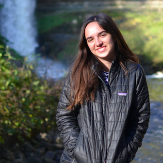

ABOUT
Zoe Husted
UC Berkeley c/o 2021
Electrical Engineering
and Computer Science
Originally from San Diego, CA & currently a Sophomore at UC Berkeley studying Electrical Engineering and Computer Science
Interested in software engineering, data science, and machine learning
Languages: Python, Java, HTML/CSS, JavaScript
Corporate officer for the UC Berkeley chapter of the Society of Women Engineers. Responsibilites include planning engineering related events and events series with corporate partners for 200+ students per semester.
Committee member for Data Science Society and Berkeley Sports Analytics Group, both of which include working on data science related projects.
Currently reading: Originals by Adam Grant
Currently listening to: How I Built This on NPR
Currently working at: Google